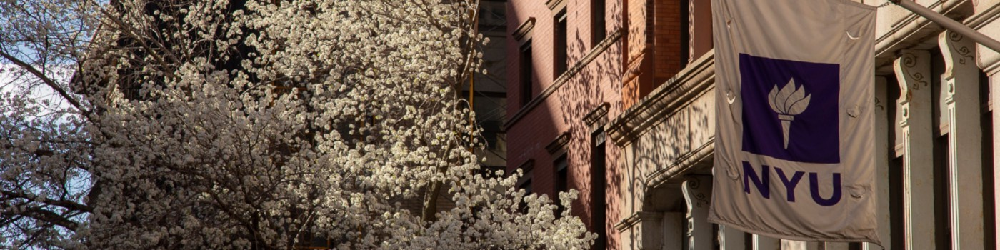

Academic Expansion + Early Research Exposure
I studied at NYU Abu Dhabi for one semester and took Linear Algebra, Ordinary Differential Equations, Electricity and Magnetism, Computational Physics, Futsal, and a research assistantship in the Astroparticle Physics Lab.
Living in the UAE expanded my cultural perspective, and the coursework changed my technical direction. Computational Physics introduced me to simulation-driven research, while the lab experience gave me direct insight into what an academic research career looks like day to day.